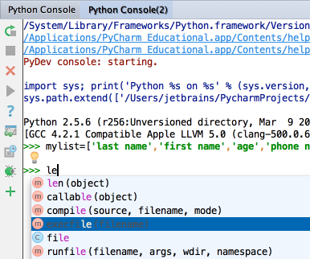

Working in an interactive console, you don't need to memorise the command line syntax or available functions. Instead, you can use the familiar code completion &shortcut:CodeCompletion;. Moreover, from within the lookup list, you can press &shortcut:QuickJavaDoc; to view the item's documentation.
